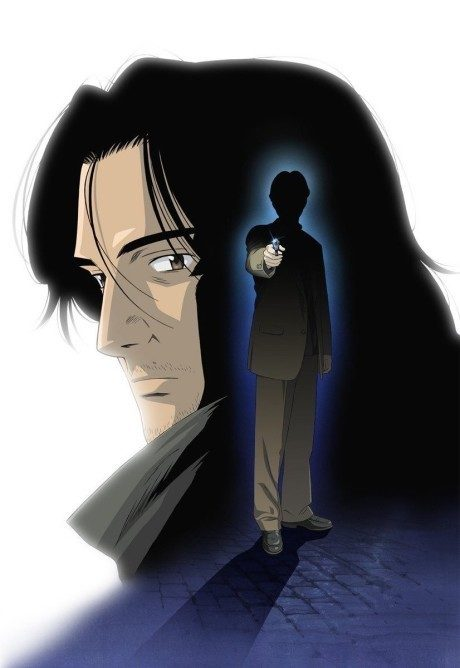
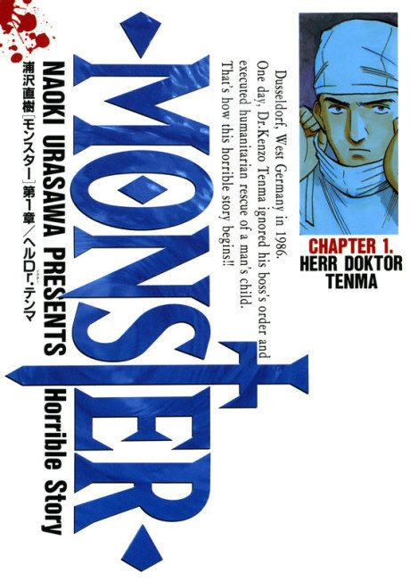

MangaAdapted Anime
MangaEpisodes numbered 1-74 in broadcast order (single season, as on Wikipedia and animefillerlist).
In 1986 Düsseldorf, Japanese neurosurgeon Kenzo Tenma defies his hospital's director to save a shot young boy instead of a politician.
Wanted for the murders, Tenma goes on the run to find Johan's twin sister.
Tenma digs into Johan's childhood while dodging the police and his own past.
In Munich, Johan grooms a wealthy publisher's son as part of a larger plan.
The trail moves to Czechoslovakia, where the truth about Johan and Nina's birth lies buried.
The twins' memories lead to the Red Rose Mansion, where Franz Bonaparta ran his experiments.
Old allies and enemies circle back as Johan's past and future plans take shape.
Everyone converges on the small Bavarian town of Ruhenheim, where Johan plans his final act.